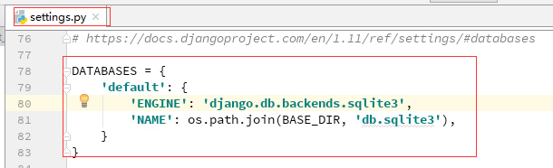

Django – 创建应用、修改配置
在黑屏终端中创建应用
在创建应用APP之前，先创建一个Django的项目。
开启黑屏终端，进入项目所在目录，执行创建APP命令（注意要在虚拟环境中执行）：
1 | cd <project directory> |
这样，一个应用就创建成功。但是这个应用APP还不能应用于项目，需要在Django项目目录中进行配置（稍后再说）。
使用PyCharm创建项目与应用
创建项目
打开PyCharm软件，点击“Create New Project”
选择左侧“Django”选项，在右侧选择项目存放路径以及给项目命名，之后选择项目的解释器环境，这里推荐使用自己创建的虚拟环境，不要使用本地环境或者默认创建的虚拟环境。最后是让Django自动创建templates模板目录，当然这里也可以直接创建应用APP。也可以稍后通过命令创建。接下来点击“Create”按钮，开始创建项目。
等待项目创建成功，项目在创建时，会下载一些第三方库，比如django框架的库，所以会花费一些时间。耐心等待…… 出现下面界面，项目创建成功。
项目文件说明：
manage.py 是Django用于管理本项目的管理集工具，之后站点运行，数据库自动生成，数据表的修改等都是通过运行该文件完成。
__init__.py 指明该目录结构是一个python包，暂无内容，在后期会初始化一些工具会使用到。
seetings.py Django项目的配置文件，其中定义了本项目的引用组件，项目名，数据库，静态资源，调试模式，域名限制等。
urls.py 项目的URL路由映射，实现客户端请求url由哪个模块进行响应。
wsgi.py 定义WSGI接口信息，通常本文件生成后无需改动
创建应用
项目创建好以后，就可以创建应用了（如果之前在选项中填写了应用，就会由Django自动创建应用）。在PyCharm界面的最下方，点击“Terminal”选项，进入终端，注意查看虚拟环境是否是正确的。之后在命令行中输入python manage.py startapp app-name 就创建了一个应用。
激活应用
刚创建的应用，需要在项目配置文件中进行配置才能使用。首先需要在项目目录中的“settings.py”文件中的INSTALLED_APPS 中添加应用的名字。
配置语言与时区
还是在项目目录中的“settings.py”文件中进行配置。
配置数据库
在“settings.py”文件中找到 DATABASES

改为：
其中 ENGINE 表示数据库引擎，即使用哪种数据库，这里使用mysql数据库，NAME 表示数据库名，USER 表示用登录mysql的用户名，PASSWORD 表示登录的密码，HOST 表示服务器主机的地址，PORT 表示端口。
注意：如果要使用mysql，需要在虚拟环境中安装第三方库pip install PyMySQL ，同时需要在项目文件目录（不是应用文件目录）中的__init__.py 文件中做如下修改，完成数据库的驱动加载：
1 | import pymysql |
配置模板目录
这里的模板就是HTML页面。在“settings.py”文件中找到 TEMPLATES ，给 DIRS 字段添加如下信息。
配置静态文件目录
现在项目的根目录下创建一个 static 目录，之后在“settings.py”文件中进行配置。
到这里，就可以在应用中编写models，生成迁移：python manage.py makemigrations 应用名 ，执行迁移：python manage.py migrate ，编写views ，修改urls ，创建template 来实现自己的Web应用了。
当然，如果需要添加自己定义的中间件也可以在 “setting.py” 文件中的 MIDDLEWARE 中进行添加；如果需要保存用户上传的图片、音视频文件也是要在 “setting.py” 文件中添加配置（一般写在配置静态文件的后面）：
1 | # 现在项目根目录下创建 media 目录 |
1 | # 在项目目录下的urls中配置： |
还有在开发环境中要将 “setting.py” 文件中的 DEBUG 设置为 True ，表示启用Debug模式，这样可以详细的看到在在开发过程中出现的错误，以便于修改。在生产环境中将 DEBUG 设置为 False 。此外还有 ALLOWED_HOSTS 表示允许访问的主机列表，一般设为ALLOWED_HOSTS = ['*'] 。
还有一个最重要的，就是日志，也需要在 “setting.py” 中进行配置：
1 | # 创建存储日志文件地址 |
logging模块可以收集记录错误，警告等调试信息，在程序中可以捕获这些信息，并且甚至可以将错误的重要信息等都可以通过邮件发送给开发者。
logging的组成：
1 | Loggers |
Loggers：
Logger 为日志系统的入口。每个logger 是一个具名的容器，可以向它写入需要处理的消息。
每个logger 都有一个日志级别。日志级别表示该logger 将要处理的消息的严重性。
Python 定义以下几种日志级别：
1 | DEBUG：用于调试目的的底层系统信息 |
日志级别等级CRITICAL > ERROR > WARNING > INFO > DEBUG > NOTSET
Handlers：
Handler 决定如何处理logger 中的每条消息。它表示一个特定的日志行为。
与logger 一样，handler 也有一个日志级别。如果消息的日志级别小于handler 的级别，handler 将忽略该消息。
Logger 可以有多个handler，而每个handler 可以有不同的日志级别。
Filters：
Filter 用于对从logger 传递给handler 的日志记录进行额外的控制。
Formatters：
日志记录需要转换成文本。
Formatter 表示文本的格式。Fomatter 通常由包含日志记录属性的Python 格式字符串组成；
你也可以编写自定义的fomatter 来实现自己的格式。